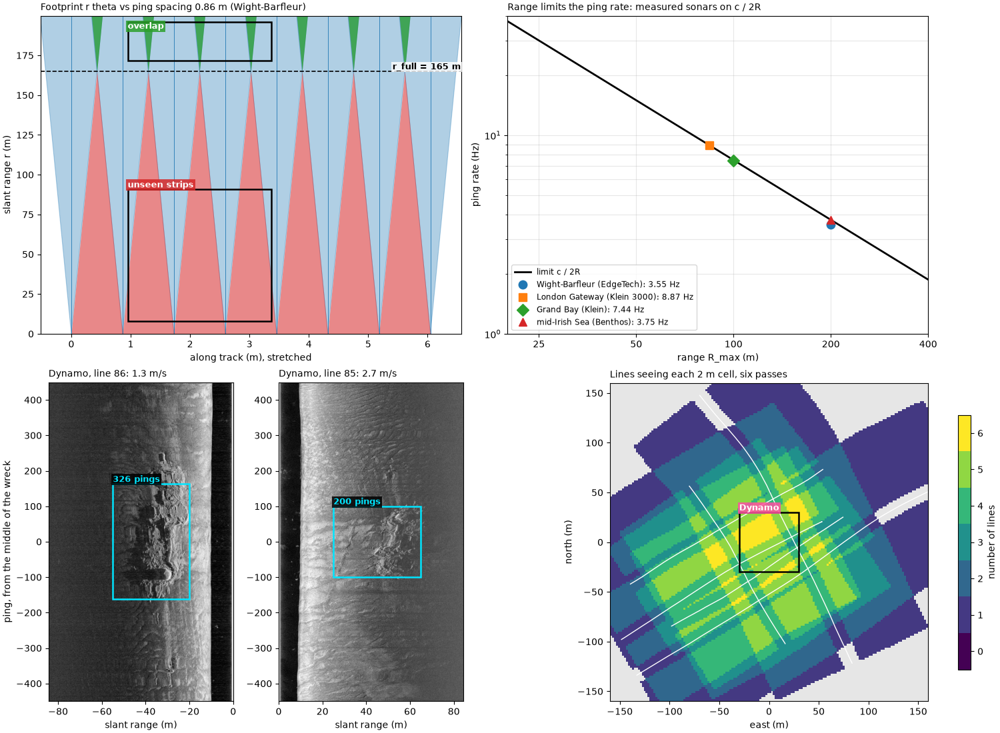
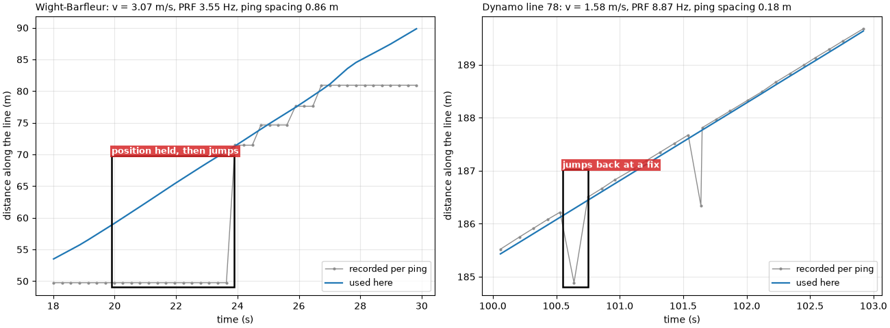
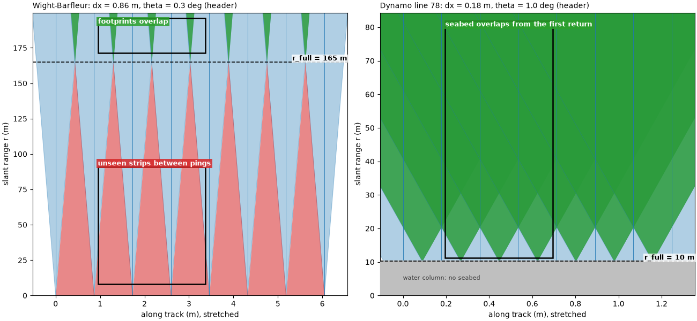
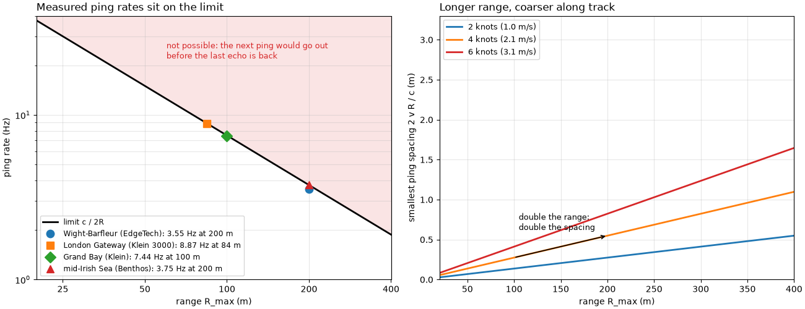
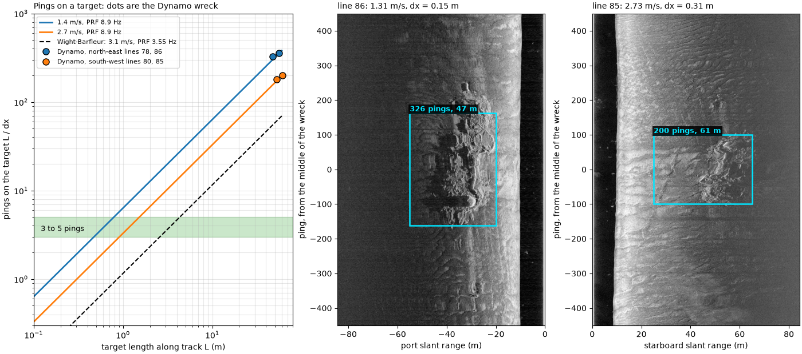
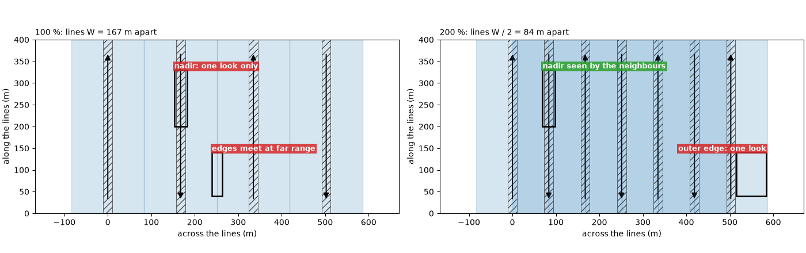
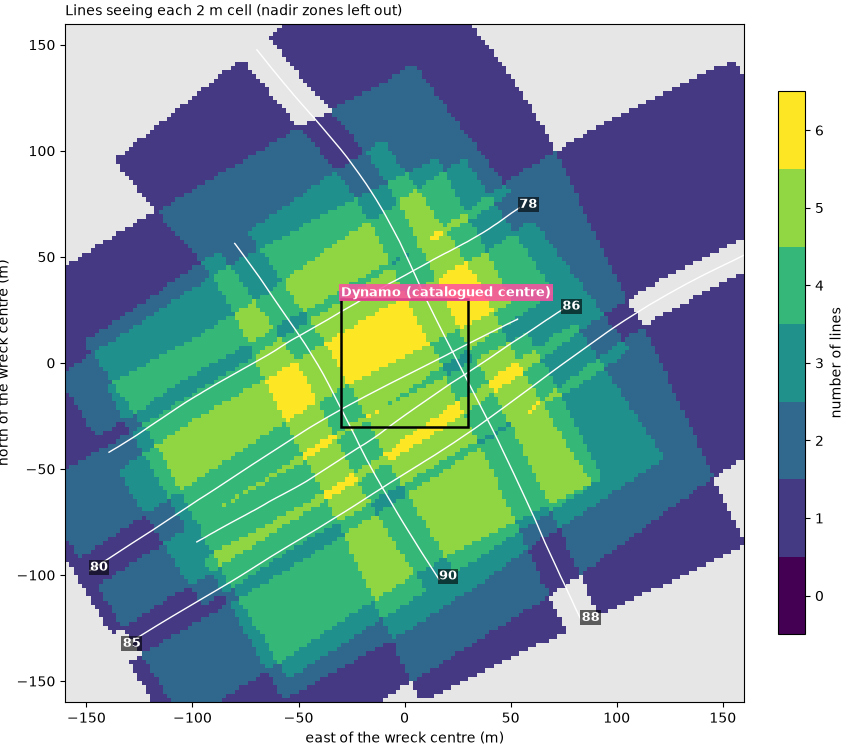

Note
Go to the end to download the full example code.
Ping spacing, footprint and coverage#

A sidescan builds its image one ping at a time while the towfish moves. Between two pings it travels the ping spacing
where v is the speed over the ground (m/s) and PRF the ping
rate (pings per second, Hz). Each ping sees a strip of seabed as wide
along track as its beam, which has a horizontal width theta
(radians). At slant range r the footprint is
so it grows with range. Close to the towfish the footprints are narrower than the ping spacing and leave strips of seabed between pings that no ping sees. They touch, and coverage along track becomes full, at
and overlap beyond it. A target of length L along track is crossed
by about
pings. One or two pings can be noise or a fish; 3 to 5 pings with a consistent echo and shadow are the usual minimum to believe a target.
Range and ping rate are linked. The next ping cannot go out until
the echo from the end of the range has come back, a round trip of
2 R_max / c seconds (c is the speed of sound, about 1500 m/s), so
Doubling the range halves the ping rate and doubles the ping spacing: the tow has to slow down, or accept fewer pings on each target and wider gaps near the towfish.
Survey coverage. Lines are run side by side. With a swath W
wide (both sides), lines W apart give 100 % coverage: every point
is seen once, the swaths only touch at their weak far edges, and the
strip under each line (the nadir zone, seen steeply from straight
above) has no second look. Lines W / 2 apart give 200 % coverage:
every point is seen twice, from opposite sides, and each nadir zone lies
in the middle of the neighbouring swaths. Lines run across the first set
add looks from other directions, which show the shadows of an object
from different sides.
Data: JNCC Wight-Barfleur Reef (Open Government Licence v3.0), BGS London Gateway (Open Government Licence v3.0, contains data supplied by UKRI), USGS Grand Bay (U.S. public domain) and JNCC mid-Irish Sea (Open Government Licence v3.0); see Example data.
Usage: python examples/theory/plot_ping_spacing_and_coverage.py [output_dir]
# 2026 rshomberg@uri.edu
import sys
from pathlib import Path
import matplotlib.pyplot as plt
import numpy as np
from matplotlib.patches import FancyArrowPatch, Polygon, Rectangle
from pyproj import Transformer
from scipy.ndimage import binary_closing, median_filter, uniform_filter1d
from sidescanpy import datasets
from sidescanpy.io import read_and_convert
from sidescanpy.io.xtf.reader import read_xtf_header
from sidescanpy.log import configure_logging
from sidescanpy.processing import (
altitude_from_bottom_track,
apply_layback,
compute_geometric_ranges,
compute_georeferencing,
course_over_ground,
interpolate_aux_onto_pings,
smooth_navigation,
)
from sidescanpy.processing.navigation import along_track_distance_m
out = Path(sys.argv[1]) if len(sys.argv) > 1 else Path(".")
out.mkdir(parents=True, exist_ok=True)
configure_logging("ERROR")
C = 1500.0 # m/s; these files record no sound velocity, or 1500 m/s
MARK = "#00e5ff" # label colour on the sonar images
GAP, OVERLAP = "#d62728", "#2ca02c" # unseen seabed, seabed seen twice
def seconds(ds):
return (ds["time"].values - ds["time"].values[0]) / np.timedelta64(1, "s")
def east_north(ds, epsg):
return Transformer.from_crs(4326, epsg, always_xy=True).transform(ds["longitude"].values, ds["latitude"].values)
def mark(ax, x0, x1, y0, y1, text, colour=MARK, inside=False, ha="left", dashed=False):
"""Box a feature and label it, above the box or just inside its top."""
ax.add_patch(Rectangle((x0, y0), x1 - x0, y1 - y0, fill=False, ec=colour if colour == MARK else "k", lw=1.8,
ls="--" if dashed else "-", zorder=5))
if text:
ax.text(x0 if ha == "left" else x1, y1, text, color=colour if colour == MARK else "white", fontsize=9,
fontweight="bold", ha=ha, va="top" if inside else "bottom", clip_on=True,
bbox=dict(fc="black" if colour == MARK else colour, alpha=0.85, ec="none", pad=1.5), zorder=6)
Speed and ping rate on two lines#
Wight-Barfleur (EdgeTech, 200 m range): the per-ping position in
the file is held for many pings and then jumps, but the navigation
record beside it updates about once a second.
interpolate_aux_onto_pings() places each
ping between those fixes, which gives a smooth track to measure speed
on. Dynamo line 78 (BGS, Klein, 84 m range): the position changes
at every ping but jumps back 1 to 3 m at every GPS fix;
smooth_navigation() removes that (see
Navigation: held fixes, interpolation and the track). The ping rate is the number of
ping intervals over the time they span. The beam width theta is
the horizontal beam angle in each XTF file header: a configured value,
not a measurement (the JSF file records none; its XTF copy says 0.3°).
wb_survey = read_and_convert([datasets.fetch("jncc_wight_barfleur_20130321174522.jsf")], fmt="jsf")
wb_raw = wb_survey.get_frequency("hz_521000").dataset
wb_complete = np.isfinite(wb_raw["backscatter_intensity"].values).all(axis=(1, 2))
wb_raw = wb_raw.isel(ping=wb_complete)
wb = interpolate_aux_onto_pings(wb_survey).get_frequency("hz_521000").dataset.isel(ping=wb_complete)
bgs_raw_survey = read_and_convert([datasets.fetch("bgs_london_gateway_dynamo_78.xtf")], fmt="xtf",
nav_crs="EPSG:32631")
bgs_raw = interpolate_aux_onto_pings(bgs_raw_survey).get_frequency("hz_400000").dataset
bgs = smooth_navigation(bgs_raw, window_s=5.0)
LINES = {}
for name, raw, ds, epsg, xtf in (
("Wight-Barfleur", wb_raw, wb, 32630, "jncc_wight_barfleur_20130321174522H.xtf"),
("Dynamo line 78", bgs_raw, bgs, 32631, "bgs_london_gateway_dynamo_78.xtf")):
t = seconds(ds)
e, n = east_north(ds, epsg)
path = float(np.sum(np.hypot(np.diff(e), np.diff(n))))
prf = (ds.sizes["ping"] - 1) / t[-1]
r_max = ds.sizes["sample"] * C / (2 * ds.attrs["sample_rate_hz"])
theta_deg = float(read_xtf_header(datasets.fetch(xtf)).chan_info["HorizBeamAngle"][0])
v = path / t[-1]
dx = v / prf
LINES[name] = dict(raw=raw, ds=ds, epsg=epsg, v=v, prf=prf, dx=dx, r_max=r_max, theta=np.radians(theta_deg),
theta_deg=theta_deg, r_full=dx / np.radians(theta_deg))
re, rn = east_north(raw, epsg)
print(f"{name}: {ds.sizes['ping']} pings in {t[-1]:.1f} s -> PRF {prf:.2f} Hz; "
f"{np.unique(re).size} distinct recorded positions; track {path:.0f} m -> v = {v:.2f} m/s")
print(f" ping spacing v / PRF = {v:.2f} / {prf:.2f} = {dx:.3f} m; header beam angle {theta_deg:.1f} deg; "
f"full coverage from r = {dx:.3f} / {np.radians(theta_deg):.5f} = {dx / np.radians(theta_deg):.0f} m "
f"(recorded range {r_max:.0f} m)")
fig, axes = plt.subplots(1, 2, figsize=(13, 4.8), constrained_layout=True)
for ax, (name, p), window in zip(axes, LINES.items(), ((18.0, 30.0), (100.0, 103.0))):
t = seconds(p["ds"])
sel = (t >= window[0]) & (t <= window[1])
for ds, label, style in ((p["raw"], "recorded per ping", dict(color="0.55", lw=1.0, marker=".", ms=4)),
(p["ds"], "used here", dict(color="C0", lw=1.6))):
e, n = east_north(ds, p["epsg"])
e0, n0 = east_north(p["ds"], p["epsg"])
u = np.array([e0[-1] - e0[0], n0[-1] - n0[0]])
u /= np.hypot(*u)
along = (e - e0[0]) * u[0] + (n - n0[0]) * u[1]
ax.plot(t[sel], along[sel], label=label, **style)
ax.set_xlabel("time (s)")
ax.set_ylabel("distance along the line (m)")
ax.set_title(f"{name}: v = {p['v']:.2f} m/s, PRF {p['prf']:.2f} Hz, ping spacing {p['dx']:.2f} m",
loc="left", fontsize=10)
ax.grid(alpha=0.3)
ax.legend(loc="lower right", fontsize=9)
HELD_BOX = (19.9, 23.9)
held = (seconds(wb) >= HELD_BOX[0]) & (seconds(wb) <= HELD_BOX[1])
wb_e, wb_n = east_north(wb_raw, 32630)
print(f"Wight-Barfleur, {HELD_BOX[0]:.0f} to {HELD_BOX[1]:.0f} s: {held.sum()} pings carry "
f"{np.unique(wb_e[held]).size} recorded positions")
lo, hi = axes[0].get_ylim()
mark(axes[0], *HELD_BOX, lo + 0.03 * (hi - lo), lo + 0.5 * (hi - lo), "position held, then jumps", colour=GAP)
lo, hi = axes[1].get_ylim()
mark(axes[1], 100.55, 100.75, lo + 0.03 * (hi - lo), lo + 0.45 * (hi - lo), "jumps back at a fix", colour=GAP)
fig.savefig(out / "ping_spacing_speed.png", dpi=150)

Wight-Barfleur: 287 pings in 80.5 s -> PRF 3.55 Hz; 34 distinct recorded positions; track 247 m -> v = 3.07 m/s
ping spacing v / PRF = 3.07 / 3.55 = 0.864 m; header beam angle 0.3 deg; full coverage from r = 0.864 / 0.00524 = 165 m (recorded range 200 m)
Dynamo line 78: 2339 pings in 263.6 s -> PRF 8.87 Hz; 2338 distinct recorded positions; track 416 m -> v = 1.58 m/s
ping spacing v / PRF = 1.58 / 8.87 = 0.178 m; header beam angle 1.0 deg; full coverage from r = 0.178 / 0.01745 = 10 m (recorded range 84 m)
Wight-Barfleur, 20 to 24 s: 14 pings carry 1 recorded positions
Footprints and the full-coverage range#
A top view of eight pings on each line, drawn to the measured spacing
and the header beam angle. The along-track axis is stretched about 100
times against range so that the footprints are visible; the shapes are
to scale along each axis. Red is seabed between footprints that no
ping sees; green is seabed two pings see. The dashed line is
r_full. On the Dynamo line, the seabed starts at the towfish’s
altitude (about 10 m slant range), so almost all of it is covered.
def footprint_view(ax, p, n_pings=8, altitude=None):
"""Top view of ``n_pings`` footprints (along track, range), gaps and overlaps shaded."""
r = np.linspace(0, p["r_max"], 200)
half = r * p["theta"] / 2
centres = np.arange(n_pings) * p["dx"]
for k, x in enumerate(centres):
ax.add_patch(Polygon(np.c_[np.r_[x - half, (x + half)[::-1]], np.r_[r, r[::-1]]], fc="C0", ec="C0",
alpha=0.35, lw=0.8))
ax.plot([x, x], [0, p["r_max"]], color="C0", lw=0.6)
if k:
gap = (x - half) - (centres[k - 1] + half)
ax.fill_betweenx(r, centres[k - 1] + half, x - half, where=gap > 0, color=GAP, alpha=0.55, lw=0)
ax.fill_betweenx(r, x - half, centres[k - 1] + half, where=gap < 0, color=OVERLAP, alpha=0.75, lw=0)
ax.axhline(p["r_full"], color="k", ls="--", lw=1.2, zorder=4)
ax.text(centres[-1] + 0.6 * p["dx"], p["r_full"], f"r_full = {p['r_full']:.0f} m", va="bottom", ha="right",
fontsize=9, fontweight="bold", zorder=6, bbox=dict(fc="white", alpha=0.8, ec="none", pad=1))
if altitude is not None:
ax.axhspan(0, altitude, color="0.75", zorder=3)
ax.text(centres[0], altitude / 2, "water column: no seabed", va="center", fontsize=8, color="0.2", zorder=4)
ax.set_xlim(-0.6 * p["dx"], centres[-1] + 0.6 * p["dx"])
ax.set_ylim(0, p["r_max"])
ax.set_xlabel("along track (m), stretched")
ax.set_ylabel("slant range r (m)")
bgs_altitude = float(np.nanmedian(altitude_from_bottom_track(bgs)["altitude_m"].values))
fig, axes = plt.subplots(1, 2, figsize=(13, 6), constrained_layout=True)
for ax, (name, p), alt in zip(axes, LINES.items(), (None, bgs_altitude)):
footprint_view(ax, p, altitude=alt)
ax.set_title(f"{name}: dx = {p['dx']:.2f} m, theta = {p['theta_deg']:.1f} deg (header)", loc="left",
fontsize=10)
p = LINES["Wight-Barfleur"]
mark(axes[0], 1.1 * p["dx"], 3.9 * p["dx"], 8, 0.55 * p["r_full"], "unseen strips between pings", colour=GAP)
mark(axes[0], 1.1 * p["dx"], 3.9 * p["dx"], 1.04 * p["r_full"], 0.98 * p["r_max"], "footprints overlap",
colour=OVERLAP, inside=True)
p = LINES["Dynamo line 78"]
mark(axes[1], 1.1 * p["dx"], 3.9 * p["dx"], 1.1 * p["r_full"], 0.97 * p["r_max"],
"seabed overlaps from the first return", colour=OVERLAP, inside=True)
fig.savefig(out / "ping_spacing_footprints.png", dpi=150)
for name, p in LINES.items():
print(f"{name}: footprint r theta = {50 * p['theta']:.2f} m at 50 m and {p['r_max'] * p['theta']:.2f} m at "
f"{p['r_max']:.0f} m, against the ping spacing {p['dx']:.2f} m")

Wight-Barfleur: footprint r theta = 0.26 m at 50 m and 1.05 m at 200 m, against the ping spacing 0.86 m
Dynamo line 78: footprint r theta = 0.87 m at 50 m and 1.47 m at 84 m, against the ping spacing 0.18 m
Range sets the ping rate#
The limit c / 2 R_max against range, with the measured ping rate
and recorded range of four sonars. Each ping rate is the number of ping
intervals over the time they span, from the ping times in the file.
Right: the ping spacing that follows at three tow speeds when the
sonar pings as fast as its range allows.
SONARS = {"Wight-Barfleur (EdgeTech)": ("jncc_wight_barfleur_20130321174522.jsf", "jsf"),
"London Gateway (Klein 3000)": ("bgs_london_gateway_dynamo_78.xtf", "xtf"),
"Grand Bay (Klein)": ("usgs_grand_bay_150602205800.xtf", "xtf"),
"mid-Irish Sea (Benthos)": ("jncc_mid_irish_sea_MIS11_0.xtf", "xtf")}
measured = {}
for label, (fname, fmt) in SONARS.items():
if label.startswith("Wight"):
ds = wb
elif label.startswith("London"):
ds = bgs
else:
survey = read_and_convert([datasets.fetch(fname)], fmt=fmt)
ds = survey.get_frequency(survey.frequencies[0]).dataset
t = seconds(ds)
sound = float(np.nanmedian(ds["sound_vel_ms"].values))
sound = sound if sound > 1000 else C
r_max = ds.sizes["sample"] * sound / (2 * ds.attrs["sample_rate_hz"])
prf = (ds.sizes["ping"] - 1) / t[-1]
measured[label] = (r_max, prf)
print(f"{label}: range {r_max:.1f} m, limit c / 2R = {sound:.0f} / {2 * r_max:.1f} = "
f"{sound / (2 * r_max):.2f} Hz; measured PRF {prf:.2f} Hz ({100 * prf / (sound / (2 * r_max)):.0f} %)")
R = np.linspace(20, 400, 300)
fig, (ax_l, ax_r) = plt.subplots(1, 2, figsize=(13, 5), constrained_layout=True)
ax_l.plot(R, C / (2 * R), color="k", lw=2, label="limit c / 2R")
ax_l.fill_between(R, C / (2 * R), 40, color=GAP, alpha=0.12, lw=0)
ax_l.text(60, 22, "not possible: the next ping would go out\nbefore the last echo is back", color=GAP,
fontsize=9)
for (label, (r_max, prf)), marker in zip(measured.items(), "osD^"):
ax_l.plot(r_max, prf, marker, ms=9, label=f"{label}: {prf:.2f} Hz at {r_max:.0f} m")
ax_l.set_xscale("log")
ax_l.set_yscale("log")
ax_l.set_xlim(20, 400)
ax_l.set_ylim(1, 40)
ax_l.set_xticks([25, 50, 100, 200, 400], labels=["25", "50", "100", "200", "400"])
ax_l.set_xticks([], minor=True)
ax_l.set_xlabel("range R_max (m)")
ax_l.set_ylabel("ping rate (Hz)")
ax_l.set_title("Measured ping rates sit on the limit", loc="left")
ax_l.grid(alpha=0.3, which="both")
ax_l.legend(loc="lower left", fontsize=8.5)
for knots, colour in ((2, "C0"), (4, "C1"), (6, "C3")):
v = knots * 1852 / 3600
ax_r.plot(R, 2 * v * R / C, color=colour, lw=2, label=f"{knots} knots ({v:.1f} m/s)")
ax_r.annotate("", xy=(200, 2 * 2.06 * 200 / C), xytext=(100, 2 * 2.06 * 100 / C),
arrowprops=dict(arrowstyle="->", color="k", lw=1.2))
ax_r.text(105, 0.62, "double the range:\ndouble the spacing", fontsize=9)
ax_r.set_xlim(20, 400)
ax_r.set_ylim(0, 3.3)
ax_r.set_xlabel("range R_max (m)")
ax_r.set_ylabel("smallest ping spacing 2 v R / c (m)")
ax_r.set_title("Longer range, coarser along track", loc="left")
ax_r.grid(alpha=0.3)
ax_r.legend(loc="upper left", fontsize=9)
fig.savefig(out / "ping_spacing_prf_limit.png", dpi=150)

Wight-Barfleur (EdgeTech): range 199.9 m, limit c / 2R = 1500 / 399.9 = 3.75 Hz; measured PRF 3.55 Hz (95 %)
London Gateway (Klein 3000): range 84.4 m, limit c / 2R = 1500 / 168.7 = 8.89 Hz; measured PRF 8.87 Hz (100 %)
Grand Bay (Klein): range 100.0 m, limit c / 2R = 1500 / 200.0 = 7.50 Hz; measured PRF 7.44 Hz (99 %)
mid-Irish Sea (Benthos): range 199.5 m, limit c / 2R = 1500 / 399.0 = 3.76 Hz; measured PRF 3.75 Hz (100 %)
Pings on a target#
Six BGS lines cross the Dynamo wreck with the same sonar and the same ping rate, but at different speeds over the ground: a tidal current slowed the lines run north-east and sped up those run south-west. Along four of them the wreck lies along the track. For each, the wreck’s extent along track is found from the image: the samples in the range band holding the wreck (picked by eye) are compared with the median at the same range over the 200 pings around them, and the wreck is the run of pings where more of them than usual differ by over 6 dB. The extent includes the scour and debris around the hull.
LAYBACK_M = 15.0 # found from opposite passes, see the four-passes example
DYNAMO = {78: (1, 15, 55), 80: (1, 12, 45), 85: (1, 25, 65), 86: (0, 20, 55), 88: None, 90: None}
wreck_e, wreck_n = datasets.BGS_LONDON_GATEWAY_WRECKS["Dynamo"]
passes = {}
for number, band in DYNAMO.items():
survey = read_and_convert([datasets.fetch(f"bgs_london_gateway_dynamo_{number}.xtf")], fmt="xtf",
nav_crs="EPSG:32631")
ds = smooth_navigation(interpolate_aux_onto_pings(survey), window_s=5.0).get_frequency("hz_400000").dataset
e, n = east_north(ds, 32631)
closest = int(np.argmin(np.hypot(e - wreck_e, n - wreck_n)))
t = seconds(ds)
sl = slice(max(closest - 150, 0), closest + 150)
v = float(np.sum(np.hypot(np.diff(e[sl]), np.diff(n[sl]))) / (t[sl][-1] - t[sl][0]))
prf = (ds.sizes["ping"] - 1) / t[-1]
course = float(course_over_ground(ds, half_window_s=15.0)[closest])
passes[number] = dict(ds=ds, closest=closest, v=v, prf=prf, dx=v / prf, course=course, band=band)
sample_m = C / (2 * bgs.attrs["sample_rate_hz"])
for number, p in passes.items():
if p["band"] is None:
continue
side, r0, r1 = p["band"]
a, b = max(p["closest"] - 350, 0), min(p["closest"] + 450, p["ds"].sizes["ping"])
amp = np.abs(p["ds"]["backscatter_intensity"].values[a:b, side, int(r0 / sample_m):int(r1 / sample_m)])
level = 20 * np.log10(uniform_filter1d(amp.astype(float), 10, axis=1) + 1.0)
differs = np.abs(level - median_filter(level, size=(201, 1), mode="nearest")) > 6.0
score = uniform_filter1d(differs.mean(axis=1), 25)
base = np.percentile(score, 10)
above = binary_closing(score > base + 0.25 * (score.max() - base), np.ones(41))
i = j = int(np.argmax(score))
while i > 0 and above[i - 1]:
i -= 1
while j < above.size - 1 and above[j + 1]:
j += 1
dist = along_track_distance_m(p["ds"].isel(ping=slice(a, b)))
p.update(first=a + i, last=a + j, n=j - i + 1, length=float(dist[j] - dist[i]), window=(a, b))
print(f"line {number}: course {p['course']:03.0f} deg, {p['v']:.2f} m/s, PRF {p['prf']:.2f} Hz, "
f"spacing {p['dx']:.3f} m: wreck on pings {p['first']}-{p['last']} = {p['n']} pings over "
f"{p['length']:.1f} m; L / dx = {p['length']:.1f} / {p['dx']:.3f} = {p['length'] / p['dx']:.0f}")
L_axis = np.linspace(0.1, 60, 300)
fig = plt.figure(figsize=(14, 6.2), constrained_layout=True)
grid = fig.add_gridspec(1, 3, width_ratios=[1.25, 1, 1])
ax_c = fig.add_subplot(grid[0])
prf_bgs = LINES["Dynamo line 78"]["prf"]
for v, colour in ((1.4, "C0"), (2.7, "C1")):
ax_c.plot(L_axis, L_axis * prf_bgs / v, color=colour, lw=2, label=f"{v:.1f} m/s, PRF {prf_bgs:.1f} Hz")
v_wb = LINES["Wight-Barfleur"]
ax_c.plot(L_axis, L_axis / v_wb["dx"], color="k", lw=1.5, ls="--",
label=f"Wight-Barfleur: {v_wb['v']:.1f} m/s, PRF {v_wb['prf']:.2f} Hz")
ax_c.axhspan(3, 5, color=OVERLAP, alpha=0.25)
ax_c.text(0.12, 3.5, "3 to 5 pings", fontsize=9, color="k")
for fast, label in ((False, "Dynamo, north-east lines 78, 86"), (True, "Dynamo, south-west lines 80, 85")):
dots = [p for p in passes.values() if "n" in p and (p["v"] > 2) == fast]
ax_c.plot([p["length"] for p in dots], [p["n"] for p in dots], "o", color="C1" if fast else "C0", mec="k",
ms=8, label=label)
ax_c.set_xscale("log")
ax_c.set_yscale("log")
ax_c.set_xlim(0.1, 80)
ax_c.set_ylim(0.3, 1000)
ax_c.set_xlabel("target length along track L (m)")
ax_c.set_ylabel("pings on the target L / dx")
ax_c.set_title("Pings on a target: dots are the Dynamo wreck", loc="left", fontsize=10)
ax_c.grid(alpha=0.3, which="both")
ax_c.legend(loc="upper left", fontsize=8)
def native_side(p, half_height=450):
"""The wreck's side of the swath, ping by slant range, centred on the wreck's extent."""
side = p["band"][0]
mid = (p["first"] + p["last"]) // 2
a, b = max(mid - half_height, 0), min(mid + half_height, p["ds"].sizes["ping"])
amp = np.abs(p["ds"]["backscatter_intensity"].values[a:b, side].astype(float))
db = 20 * np.log10(amp + 1.0)
extent = [0, amp.shape[1] * sample_m, a - mid, b - mid]
if side == 0:
db, extent = db[:, ::-1], [-amp.shape[1] * sample_m, 0, a - mid, b - mid]
return db, extent, mid
for k, number in enumerate((86, 85)):
p = passes[number]
ax = fig.add_subplot(grid[k + 1])
db, extent, mid = native_side(p)
lo, hi = np.nanpercentile(db, [1, 99.5])
ax.imshow(db, cmap="gray", vmin=lo, vmax=hi, origin="lower", aspect="auto", extent=extent)
side, r0, r1 = p["band"]
x0, x1 = (-r1, -r0) if side == 0 else (r0, r1)
mark(ax, x0, x1, p["first"] - mid, p["last"] - mid, f"{p['n']} pings, {p['length']:.0f} m")
ax.set_title(f"line {number}: {p['v']:.2f} m/s, dx = {p['dx']:.2f} m", loc="left", fontsize=10)
ax.set_xlabel(f"{'port' if side == 0 else 'starboard'} slant range (m)")
ax.set_ylabel("ping, from the middle of the wreck")
ax.set_ylim(-450, 450)
fig.savefig(out / "ping_spacing_pings_on_target.png", dpi=150)

line 78: course 059 deg, 1.43 m/s, PRF 8.87 Hz, spacing 0.162 m: wreck on pings 1531-1886 = 356 pings over 56.0 m; L / dx = 56.0 / 0.162 = 346
line 80: course 241 deg, 2.59 m/s, PRF 8.86 Hz, spacing 0.293 m: wreck on pings 154-333 = 180 pings over 52.4 m; L / dx = 52.4 / 0.293 = 179
line 85: course 234 deg, 2.73 m/s, PRF 8.88 Hz, spacing 0.307 m: wreck on pings 592-791 = 200 pings over 60.8 m; L / dx = 60.8 / 0.307 = 198
line 86: course 054 deg, 1.31 m/s, PRF 8.88 Hz, spacing 0.147 m: wreck on pings 1338-1663 = 326 pings over 47.5 m; L / dx = 47.5 / 0.147 = 323
Planning coverage#
A plan view of survey lines run with the Dynamo lines’ recorded
range and altitude (84 m slant range, 10 m up), so each side reaches
sqrt(84² − 10²) = 83 m of ground range and the swath is
W = 167 m. Hatched: the nadir zone, here drawn as the strip within
one altitude of the track, where the sound arrives steeper than 45°
and the image has little contrast and no shadows. Left, lines W
apart; right, W / 2 apart. Lines alternate direction, as they are
usually run.
half_swath = float(np.sqrt((passes[78]["ds"].sizes["sample"] * sample_m) ** 2 - bgs_altitude ** 2))
W = 2 * half_swath
print(f"swath: sqrt({passes[78]['ds'].sizes['sample'] * sample_m:.1f}^2 - {bgs_altitude:.1f}^2) = "
f"{half_swath:.1f} m a side, W = {W:.0f} m; 100 % coverage lines {W:.0f} m apart, 200 % {W / 2:.0f} m apart")
def plan(ax, spacing, title):
xs = np.arange(int(round(3 * W / spacing)) + 1) * spacing
ax.set_xlim(-W, 3 * W + W)
for k, x in enumerate(xs):
ax.add_patch(Rectangle((x - half_swath, 0), W, 400, fc="C0", alpha=0.18, ec="C0", lw=1))
ax.add_patch(Rectangle((x - bgs_altitude, 0), 2 * bgs_altitude, 400, fc="none", ec="0.3", hatch="///",
lw=0.6))
ax.add_patch(FancyArrowPatch((x, 30 if k % 2 == 0 else 370), (x, 370 if k % 2 == 0 else 30),
arrowstyle="-|>", mutation_scale=14, color="k", lw=1.4))
ax.set_ylim(0, 400)
ax.set_aspect("equal")
ax.set_xlabel("across the lines (m)")
ax.set_ylabel("along the lines (m)")
ax.set_title(title, loc="left", fontsize=10)
return xs
fig, (ax_a, ax_b) = plt.subplots(1, 2, figsize=(14, 4.4), constrained_layout=True)
xs = plan(ax_a, W, f"100 %: lines W = {W:.0f} m apart")
mark(ax_a, xs[1] - bgs_altitude - 4, xs[1] + bgs_altitude + 4, 200, 330, "nadir: one look only", colour=GAP)
mark(ax_a, xs[1] + half_swath - 12, xs[1] + half_swath + 12, 40, 140, "edges meet at far range", colour=GAP)
xs = plan(ax_b, W / 2, f"200 %: lines W / 2 = {W / 2:.0f} m apart")
mark(ax_b, xs[1] - bgs_altitude - 4, xs[1] + bgs_altitude + 4, 200, 330, "nadir seen by the neighbours",
colour=OVERLAP)
mark(ax_b, xs[-1] + bgs_altitude + 2, xs[-1] + half_swath - 2, 40, 140, "outer edge: one look", colour=GAP,
ha="right")
fig.savefig(out / "ping_spacing_survey_plan.png", dpi=150)

swath: sqrt(84.4^2 - 10.4^2) = 83.7 m a side, W = 167 m; 100 % coverage lines 167 m apart, 200 % 84 m apart
Looks at the Dynamo wreck#
The six lines over the wreck were not run as a regular pattern, but they show the same idea. Each line is placed with the course over ground as heading and 15 m of layback (Four passes over one wreck: native and north-up explains both), its samples are georeferenced, and every 2 m cell is marked as seen by that line when a sample beyond the nadir zone (ground range over one altitude) lands in it. The count of lines per cell is the coverage.
CELL = 2.0
HALF = 160.0
edges_e = np.arange(wreck_e - HALF, wreck_e + HALF + CELL, CELL)
edges_n = np.arange(wreck_n - HALF, wreck_n + HALF + CELL, CELL)
looks = np.zeros((edges_n.size - 1, edges_e.size - 1), dtype=int)
tracks = {}
for number, p in passes.items():
ds = p["ds"].isel(ping=slice(max(p["closest"] - 700, 0), p["closest"] + 700)).load()
ds = ds.assign(heading_deg=("ping", course_over_ground(ds, half_window_s=15.0)))
ds = compute_georeferencing(compute_geometric_ranges(altitude_from_bottom_track(apply_layback(ds,
layback_m=LAYBACK_M))))
lon = ds["longitude_per_sample"].values[:, :, ::4]
lat = ds["latitude_per_sample"].values[:, :, ::4]
ground = ds["ground_range_m"].values[:, :, ::4]
keep = np.isfinite(lon) & (ground > ds["altitude_m"].values[:, None, None])
e, n = Transformer.from_crs(4326, 32631, always_xy=True).transform(lon[keep], lat[keep])
seen, _, _ = np.histogram2d(n, e, bins=[edges_n, edges_e])
looks += seen > 0
tracks[number] = east_north(ds, 32631)
box = 30.0
in_e = np.abs(edges_e[:-1] + CELL / 2 - wreck_e) <= box
in_n = np.abs(edges_n[:-1] + CELL / 2 - wreck_n) <= box
around = looks[np.ix_(in_n, in_e)]
print(f"within {box:.0f} m of the catalogued wreck centre: cells seen by at least 2 lines "
f"{np.mean(around >= 2):.0%}, at least 3 {np.mean(around >= 3):.0%}; fewest {around.min()}, "
f"most {around.max()} lines")
whole = looks > 0
print(f"over the whole {2 * HALF:.0f} m map: {np.mean(looks[whole] >= 2):.0%} of the seen cells are seen twice or more")
fig, ax = plt.subplots(figsize=(8.5, 7.5), constrained_layout=True)
cmap = plt.get_cmap("viridis", 7)
img = ax.imshow(np.where(looks > 0, looks, np.nan), cmap=cmap, vmin=-0.5, vmax=6.5, origin="lower",
extent=[-HALF, HALF, -HALF, HALF], interpolation="nearest")
ax.set_facecolor("0.9")
for number, (e, n) in tracks.items():
ax.plot(e - wreck_e, n - wreck_n, color="w", lw=1.0)
ax.text(e[-1] - wreck_e, n[-1] - wreck_n, str(number), color="w", fontsize=9, fontweight="bold",
clip_on=True, bbox=dict(fc="black", alpha=0.6, ec="none", pad=1))
mark(ax, -box, box, -box, box, "Dynamo (catalogued centre)", colour="#ff4fa3")
ax.set_xlim(-HALF, HALF)
ax.set_ylim(-HALF, HALF)
ax.set_xlabel("east of the wreck centre (m)")
ax.set_ylabel("north of the wreck centre (m)")
ax.set_title("Lines seeing each 2 m cell (nadir zones left out)", loc="left", fontsize=10)
fig.colorbar(img, ax=ax, ticks=range(7), label="number of lines", shrink=0.8)
fig.savefig(out / "ping_spacing_dynamo_looks.png", dpi=150)

within 30 m of the catalogued wreck centre: cells seen by at least 2 lines 100%, at least 3 100%; fewest 3, most 6 lines
over the whole 320 m map: 69% of the seen cells are seen twice or more
Summary#
The four relations on one page: footprints against range on the Wight-Barfleur line, the ping-rate limit with four sonars, pings on the Dynamo wreck against speed, and the number of looks the six lines give the wreck.
fig = plt.figure(figsize=(15, 11), constrained_layout=True)
grid = fig.add_gridspec(2, 2)
ax = fig.add_subplot(grid[0, 0])
p = LINES["Wight-Barfleur"]
footprint_view(ax, p)
mark(ax, 1.1 * p["dx"], 3.9 * p["dx"], 8, 0.55 * p["r_full"], "unseen strips", colour=GAP)
mark(ax, 1.1 * p["dx"], 3.9 * p["dx"], 1.04 * p["r_full"], 0.98 * p["r_max"], "overlap", colour=OVERLAP,
inside=True)
ax.set_title(f"Footprint r theta vs ping spacing {p['dx']:.2f} m (Wight-Barfleur)", loc="left", fontsize=10)
ax = fig.add_subplot(grid[0, 1])
ax.plot(R, C / (2 * R), color="k", lw=2, label="limit c / 2R")
for (label, (r_max, prf)), marker in zip(measured.items(), "osD^"):
ax.plot(r_max, prf, marker, ms=9, label=f"{label}: {prf:.2f} Hz")
ax.set_xscale("log")
ax.set_yscale("log")
ax.set_xlim(20, 400)
ax.set_ylim(1, 40)
ax.set_xticks([25, 50, 100, 200, 400], labels=["25", "50", "100", "200", "400"])
ax.set_xticks([], minor=True)
ax.set_xlabel("range R_max (m)")
ax.set_ylabel("ping rate (Hz)")
ax.set_title("Range limits the ping rate: measured sonars on c / 2R", loc="left", fontsize=10)
ax.grid(alpha=0.3, which="both")
ax.legend(loc="lower left", fontsize=8.5)
sub = grid[1, 0].subgridspec(1, 2)
for k, number in enumerate((86, 85)):
q = passes[number]
ax = fig.add_subplot(sub[k])
db, extent, mid = native_side(q)
lo, hi = np.nanpercentile(db, [1, 99.5])
ax.imshow(db, cmap="gray", vmin=lo, vmax=hi, origin="lower", aspect="auto", extent=extent)
side, r0, r1 = q["band"]
x0, x1 = (-r1, -r0) if side == 0 else (r0, r1)
mark(ax, x0, x1, q["first"] - mid, q["last"] - mid, f"{q['n']} pings")
ax.set_title(f"Dynamo, line {number}: {q['v']:.1f} m/s", loc="left", fontsize=10)
ax.set_xlabel("slant range (m)")
ax.set_ylim(-450, 450)
if k == 0:
ax.set_ylabel("ping, from the middle of the wreck")
ax = fig.add_subplot(grid[1, 1])
img = ax.imshow(np.where(looks > 0, looks, np.nan), cmap=cmap, vmin=-0.5, vmax=6.5, origin="lower",
extent=[-HALF, HALF, -HALF, HALF], interpolation="nearest")
ax.set_facecolor("0.9")
for e, n in tracks.values():
ax.plot(e - wreck_e, n - wreck_n, color="w", lw=1.0)
mark(ax, -box, box, -box, box, "Dynamo", colour="#ff4fa3")
ax.set_xlim(-HALF, HALF)
ax.set_ylim(-HALF, HALF)
ax.set_xlabel("east (m)")
ax.set_ylabel("north (m)")
ax.set_title("Lines seeing each 2 m cell, six passes", loc="left", fontsize=10)
fig.colorbar(img, ax=ax, ticks=range(7), label="number of lines", shrink=0.8)
fig.savefig(out / "ping_spacing_and_coverage.png", dpi=150)
Reading the result#
Ping spacing. The Wight-Barfleur towfish made 3.07 m/s over the ground and pinged at 3.55 Hz, one ping every 3.07 / 3.55 = 0.86 m. Its per-ping positions are held (14 pings on one position between 20 and 24 s) and jump by tens of meters, so the speed has to come from the interpolated track, not from neighbouring pings. The Dynamo line 78 pinged at 8.87 Hz at 1.58 m/s, one ping every 0.18 m: about five times denser.
Footprint and full coverage. With the 0.3° in its XTF header,
the Wight-Barfleur beam is 0.26 m wide at 50 m and 1.05 m at 200 m.
The footprints only touch at 0.864 / 0.00524 = 165 m, so out to 165 m,
most of the recorded 200 m, strips of seabed between pings are not
seen at all: at 50 m, 70 % of the seabed along track
(1 − 0.26 / 0.86) falls between pings. The Klein header’s 1.0° and the
0.18 m spacing give full coverage from 10 m, about the towfish’s
altitude, so on that line every patch of seabed is seen by several
pings. Both beam widths are header values, not measurements, and a
real beam has no sharp edge, so r_full is a guide rather than a
boundary.
Range limits the ping rate. All four sonars ping at 95 to 100 % of
c / 2 R_max for their range: 3.75 Hz allowed at 200 m, 8.89 Hz at
84 m, 7.50 Hz at 100 m. The ping rate is set by the range, so the
only free choice left for the ping spacing is the speed.
Pings on a target. With the same sonar and ping rate, the lines
run against the current (1.31 and 1.43 m/s) put 326 and 356 pings on
the Dynamo wreck and its scour, the lines run with it (2.59 and
2.73 m/s) only 180 and 200, each close to L / dx for its measured
extent. The extents differ (47 to 61 m) because the threshold also
catches scour and debris that the different look directions light
differently. A wreck is easy at any of these speeds. A 2 m boulder on
the Wight-Barfleur line is not: 2 / 0.86 = 2.3 pings, below the 3 to 5
wanted. Five pings need dx = 0.4 m. At 200 m range that means
0.4 × 3.55 = 1.4 m/s; halving the range to 100 m allows up to 7.5 Hz
and keeps the 3.07 m/s, with 3.07 / 7.5 = 0.41 m, about 4.9 pings.
Coverage. At the Dynamo lines’ range and altitude, a side reaches sqrt(84.4² − 10.4²) = 83.7 m of ground range, so 100 % coverage needs lines 167 m apart and 200 % lines 84 m apart. The six Dynamo lines were run over one wreck, not as a survey, and within 30 m of its catalogued centre every 2 m cell is seen by at least 3 of them, outside their nadir zones, and some by all 6. Over the whole map, 69 % of the cells seen at all are seen twice or more. Each look comes from a different side, which is what lets Four passes over one wreck: native and north-up and Eight wrecks at one scale show more of the wreck than any one line does.
In sidescanpy: interpolate_aux_onto_pings()
and smooth_navigation() give the per-ping
positions the spacing is measured on, and
along_track_distance_m() the
distance along the line. When gridding, cells finer than the ping
spacing leave empty rows between pings
(Grid to a map). Frequency, range and resolution
compares the ping spacing with the beam and the range resolution on the
Wight-Barfleur line, and Common sidescan artifacts shows what held
navigation and turns do to a map.
Total running time of the script: (0 minutes 30.925 seconds)